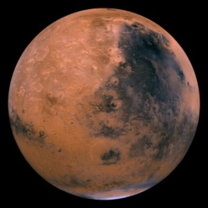
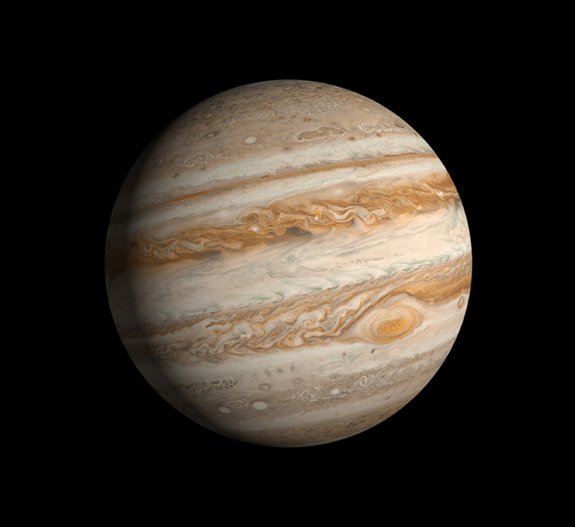
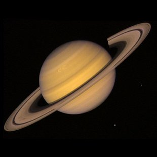
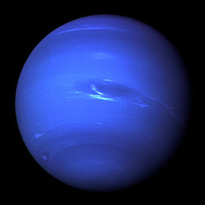

| Planet | Mass (kg) | Diameter (km) | Mean Density (kg/m3) | Escape Velocity (m/s) | Average Distance from Sun | Rotation Period (in Earth hours) | Revolution Period (in Earth years) | |
|---|---|---|---|---|---|---|---|---|
|  | Mars | 6.42 x 1023 | 6,787 | 3940 | 5000 | 1.524 AU (227,936,640 km) | 24.624 hours | 1.88 years |
|  | Jupiter | 1.90 x 1027 | 142,800 | 1314 | 59500 | 5.203 AU (778,412,020 km) | 9.8 Hours | 11.86 years |
|  | Saturn | 5.69 x 1026 | 120,660 | 690 | 35600 | 9.537 AU (1,426,75,400 km) | 10.2 Hours | 29.46 years |
|  | Neptune | 1.02 x 1026 | 49528 | 1640 | 23300 | 30.07 AU (4,498,252,900 km) | 19.1 Hours | 164.8 years |